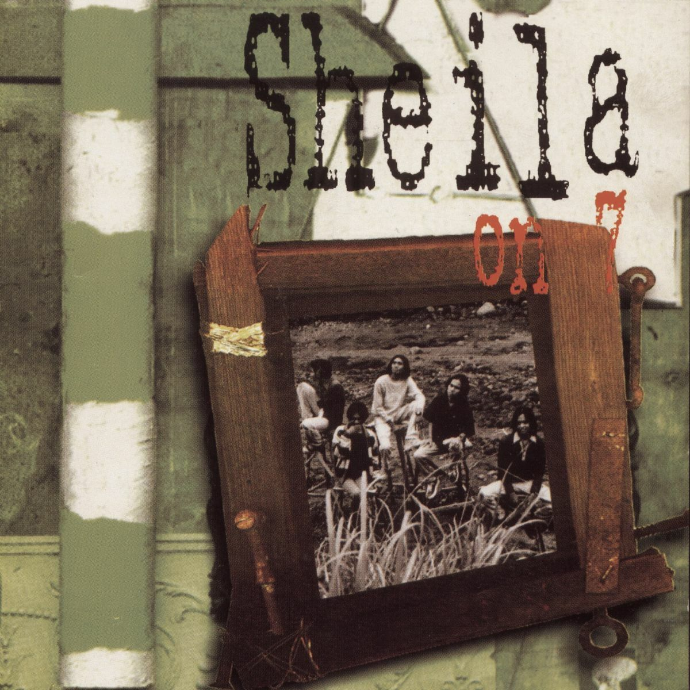
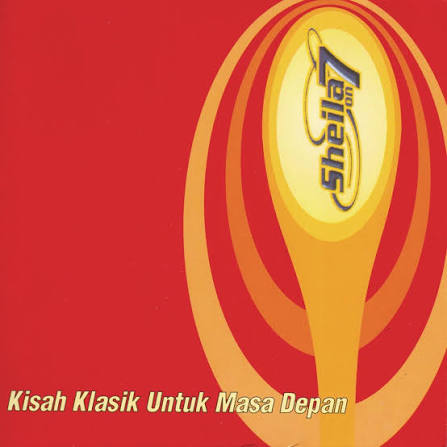
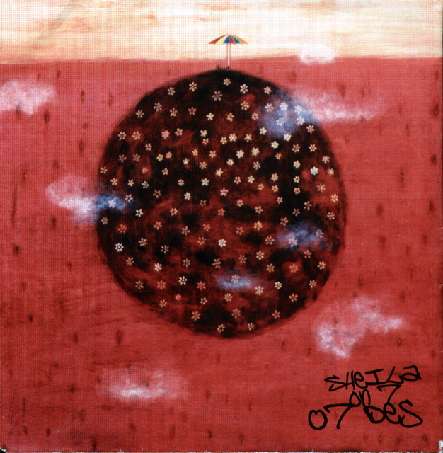

Sheila on 7
1999
Akhdiyat Duta Modjo, atau yang lebih dikenal sebagai Duta, merupakan sosok vokalis yang sangat ikonik dari band Sheila on 7. Dikenal dengan karakter vokal yang tenang, khas, dan santun, ia telah menjadi wajah utama bagi perjalanan panjang band asal Yogyakarta ini sejak debut mereka pada akhir tahun 90-an. Kesederhanaan penampilannya di atas panggung serta pembawaannya yang rendah hati membuat Duta tetap dicintai oleh berbagai generasi penggemar musik di Indonesia hingga saat ini.
Di luar pesonanya sebagai penampil, Duta berperan besar dalam menjaga relevansi karya-karya Sheila on 7 yang tak lekang oleh waktu. Ia berhasil membangun koneksi emosional yang kuat dengan pendengarnya melalui lirik-lirik melankolis dan aransemen pop yang jujur. Dedikasinya terhadap musik serta sikap profesionalnya yang konsisten telah menjadikan Duta sebagai salah satu musisi panutan yang tetap membumi meskipun telah meraih popularitas luar biasa selama puluhan tahun berkarya.
Spotify Folowers
Monthly Listenrs
Official Full Album

1999

2000

2002